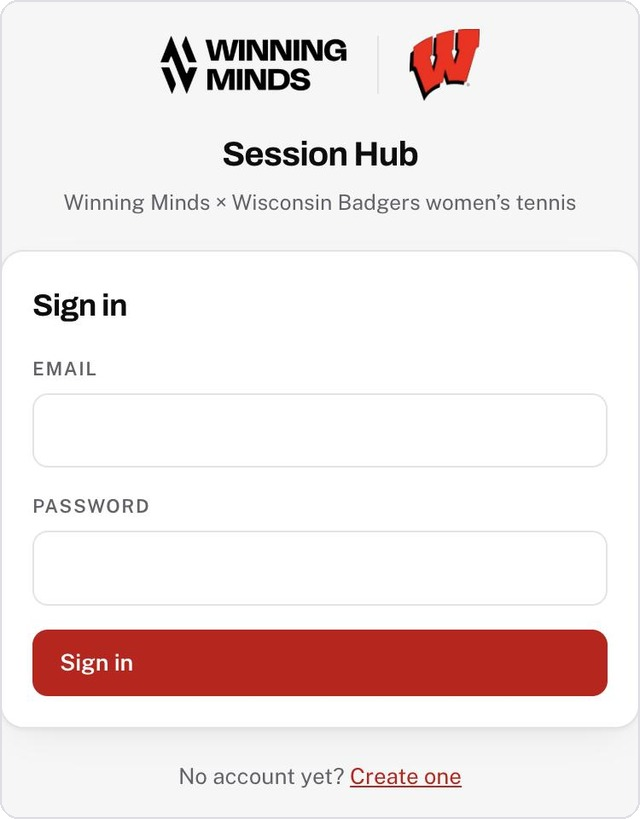
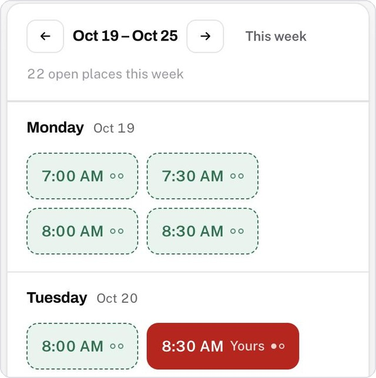
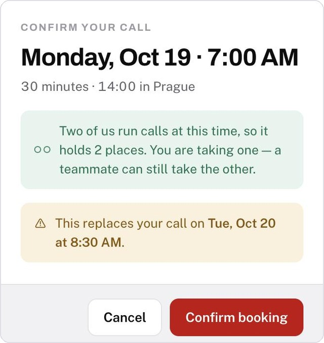
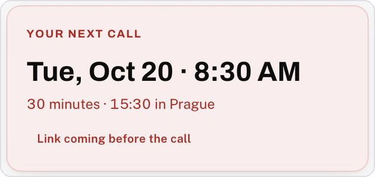
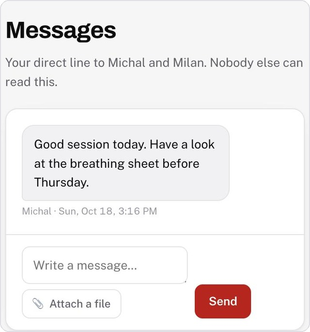
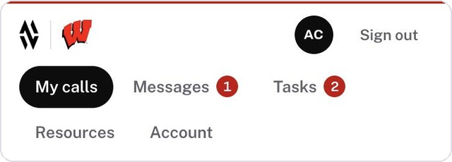

Session HubHow it works
Session Hub is where you book your call with Winning Minds, and your private line to Michal and Milan in between. Three taps and you are booked.
Everything is shown in Madison time. Prague is six or seven hours ahead depending on the month, and the app has already done that sum. Book the time you see.
Go to winningmindsperformance.com on your phone or laptop and sign in with the email and password Mára sent you.
Change that password straight away under Account → Change your password. Pick something you do not use anywhere else.
Ignore “Create one” — your account already exists.

Open My calls. Each day shows the times still open, in your own clock.
Green means free. The small dots say how many places that time holds — Michal and Milan both run calls, so most times hold two.
○○ both free ●○ one left ●● gone
The red one marked Yours is the call you already hold. Use the arrows to look at another week.

Check the details and tap Confirm booking. That is it — you are booked. First come, first served.
The Prague time is on this screen too, so you can see what it is at our end.
You hold one call per week. If you already have one that week, this screen tells you it is about to move before anything happens.

Your next call sits at the top of My calls, with the time in both clocks.
The Join Google Meet button appears there and opens ten minutes before the start. If it still says the link is coming, it is on its way — message us if the call is close.
Changed your mind? Tap your red booking and give it back. Somebody else can then take it.

Your thread under Messages goes to Michal and Milan and nobody else. Not your teammates, not your coaches. You can send a file with it.
Tasks are what we agree between calls — tick one off when it is done. Resources holds anything we have shared with you to read or watch.
A red number on a tab means something is waiting for you there.

